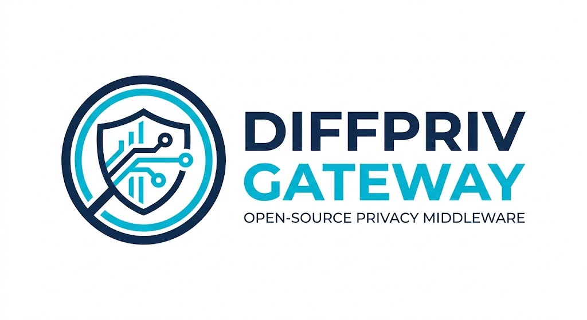

Privacy Risk
SMEs increasingly rely on data-driven decisions, but raw analytics can expose sensitive information and increase privacy risk.
Privacy-preserving analytics middleware for SME datasets using Differential Privacy.

SMEs increasingly rely on data-driven decisions, but raw analytics can expose sensitive information and increase privacy risk.
Projects that process potentially sensitive data need stronger privacy-by-design thinking and more accountable data handling.
DiffPriv-Gateway explores how Differential Privacy can be applied in a practical, modular, and explainable project setting.
Input dataset and select the target metric or column.
Choose privacy parameters and sensitivity-aware settings.
Use Laplace or Gaussian noise for privacy-preserving output.
Return post-processed, safer analytics-ready values.
Phase 3 closeout and final repository organization.
Requirements cleanup, passing tests, lint checks, and executable demo flow.
README, Wiki, Discussions, and project board are all available publicly.